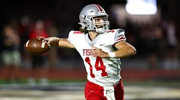
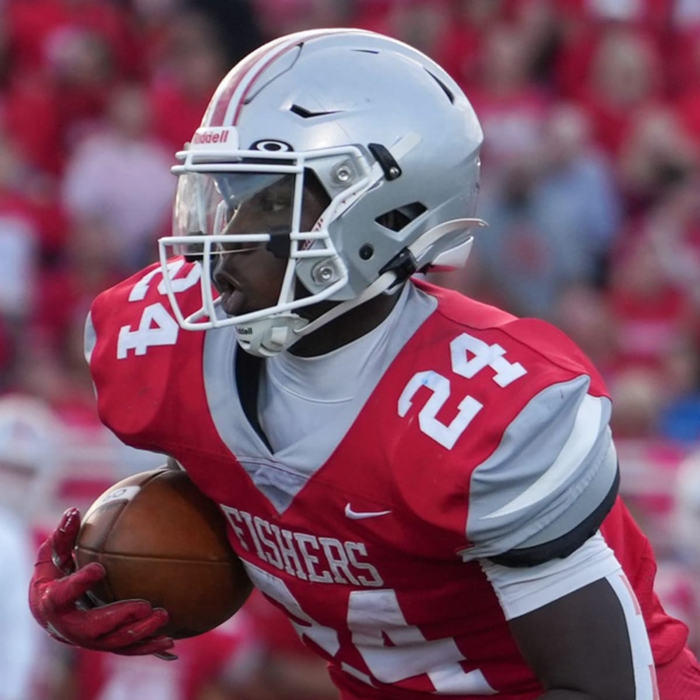
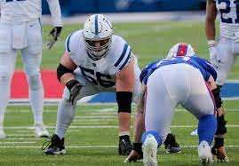

Offense is the main way a team can score points! The offensive game is rich in complexity and involves "plays" and "formations"
The Quarterback is the focal point of the offense, a "QB" is responsible for passing, handing off, and sometimes running the ball himself. He recieves the snap, then follows the play given by the coaches.
The Runningback is usually adjacent to the QuarterBack, they are respossible for being the main ball carrier in most run plays, however in some certain plays they could aid in blocking for a certain play
The Wide Reciever is responsible for running a certain route designted by the coaches. His primary job is to catch, but can occasionally serve in blocking

The OLine is a group of players responsible for protecting the quarterback from being sacked, and also opening up gaps in the defense for run plays.
